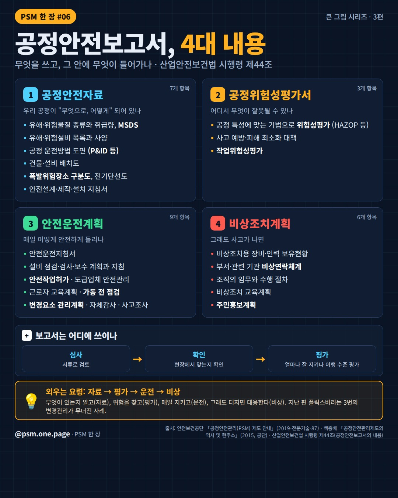
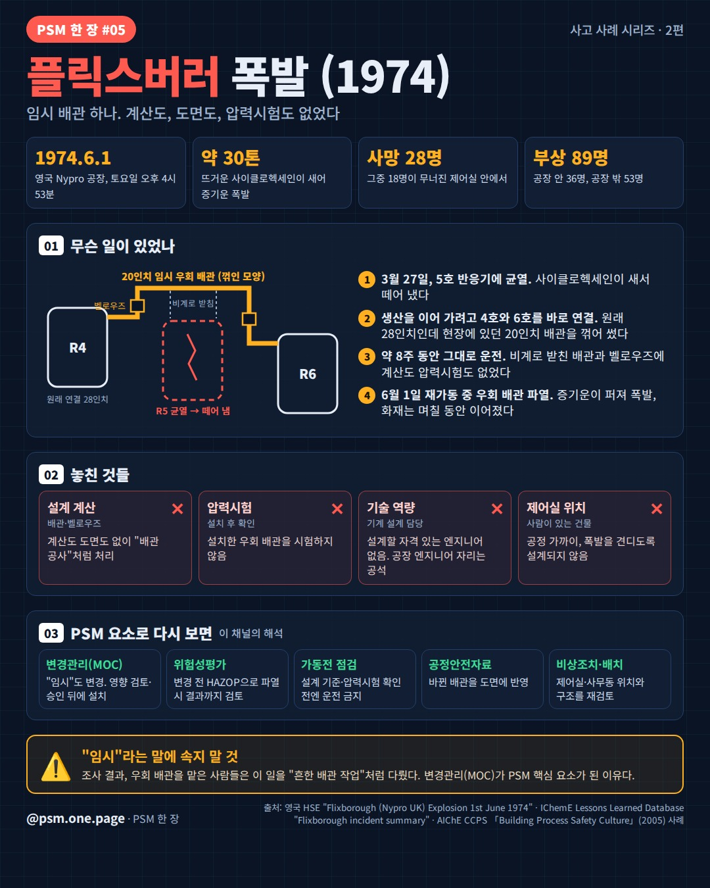
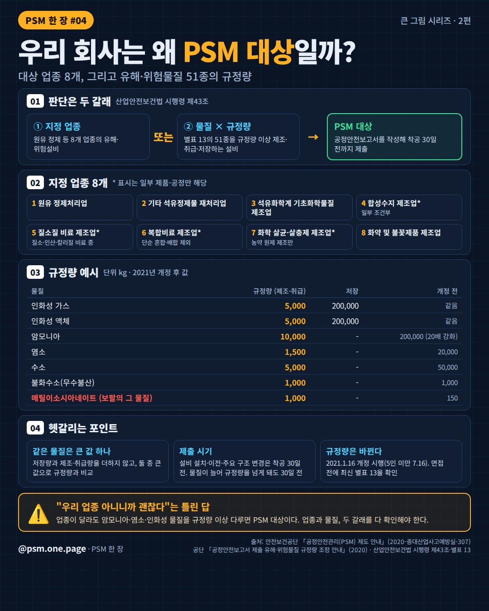
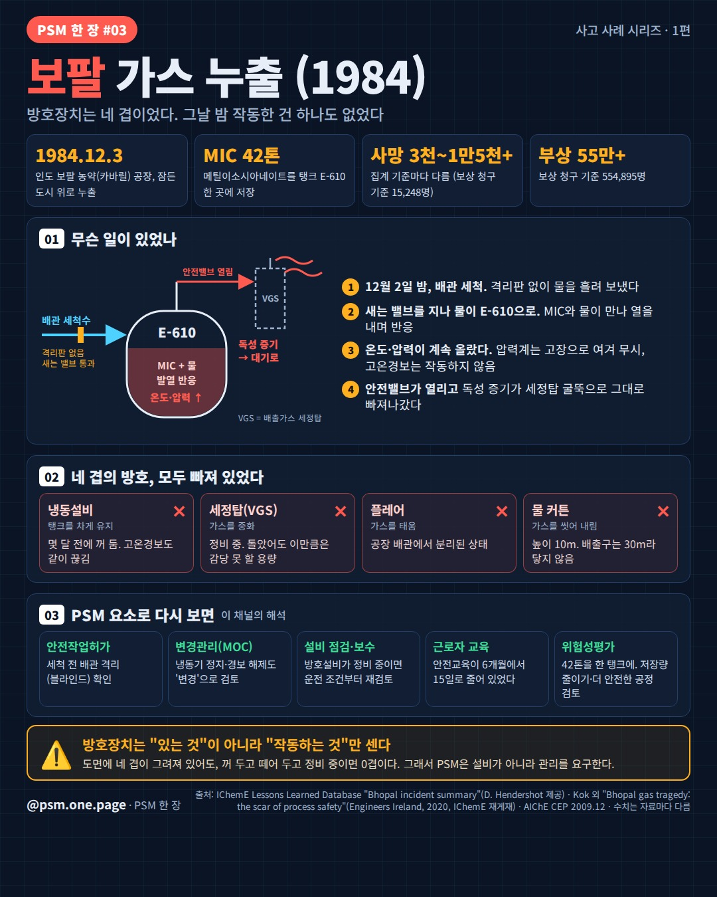
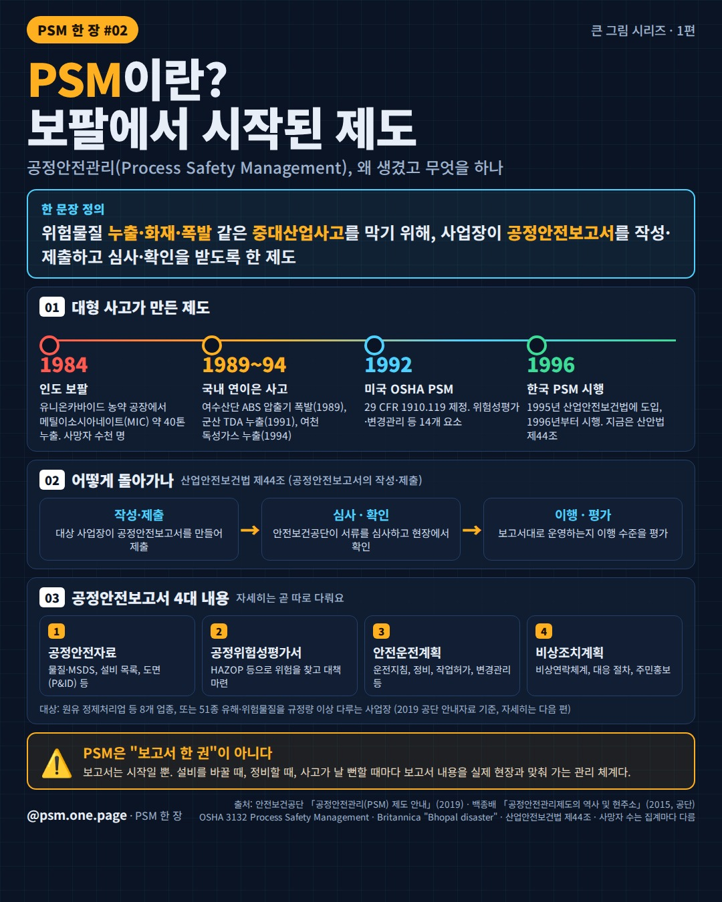
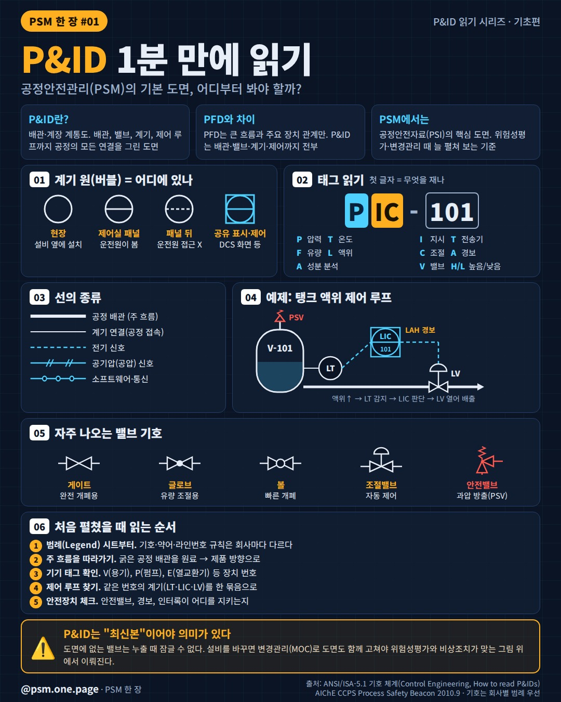

PSM 한 장
공정안전관리(PSM)를 한 장 인포그래픽으로 정리하고, 회차마다 면접 질문을 붙입니다. 안전관리자·PSM 사업장 취업 준비생과 안전공학 학생을 위해 만들어요. 모든 카드에 출처를 적어요.

📘 [PSM 면접] 공정안전보고서에 무엇이 들어가나요? 4대 내용 한 장 정리
💬 면접 질문: 공정안전보고서에 무엇이 들어가나요?

💥 [PSM 면접] 임시 배관 변경은 왜 위험한가? 플릭스버러 폭발(1974)로 보는 변경관리(MOC)
💬 면접 질문: 임시 배관 변경은 왜 위험한가요?

🏭 우리 회사는 왜 PSM 대상일까? | 큰 그림 시리즈 2편
💬 면접 질문: 우리 회사가 PSM 대상인 이유는?

☠️ 보팔 가스 누출 (1984) | 사고 사례 시리즈 1편
💬 면접 질문: PSM이 생긴 계기는?

🏭 PSM이란? 보팔에서 시작된 제도 | 큰 그림 시리즈 1편
💬 면접 질문: PSM을 한 문장으로 설명해 보세요

📐 P&ID 1분 만에 읽기 | 공정안전관리(PSM)의 기본 도면
💬 면접 질문: P&ID와 PFD의 차이는?
지금까지 나온 면접 질문
- P&ID와 PFD의 차이는?
- PSM을 한 문장으로 설명해 보세요
- PSM이 생긴 계기는?
- 우리 회사가 PSM 대상인 이유는?
- 임시 배관 변경은 왜 위험한가요?
- 공정안전보고서에 무엇이 들어가나요?